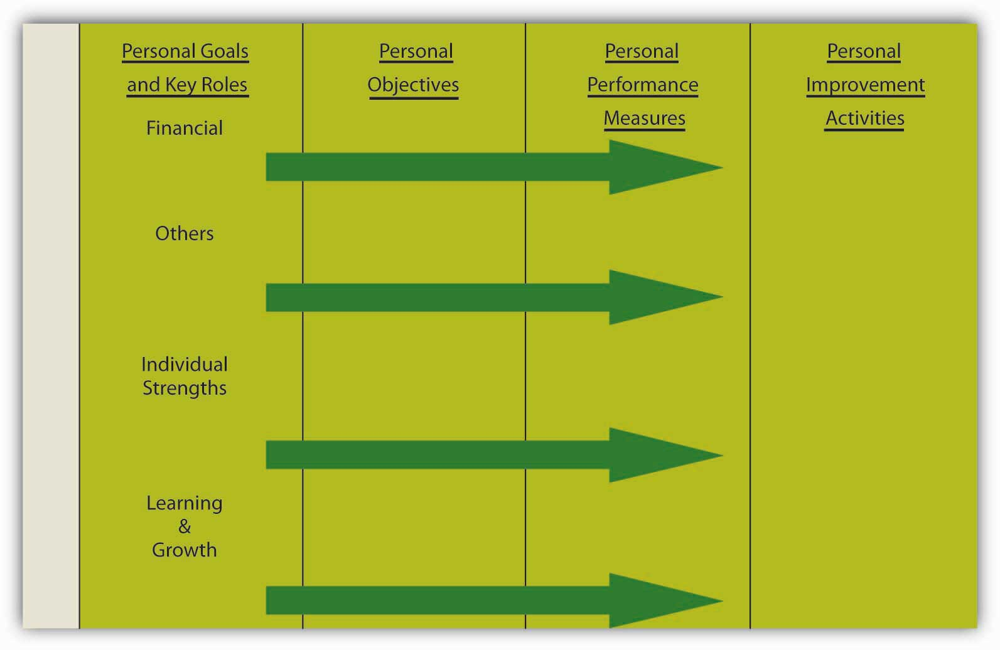
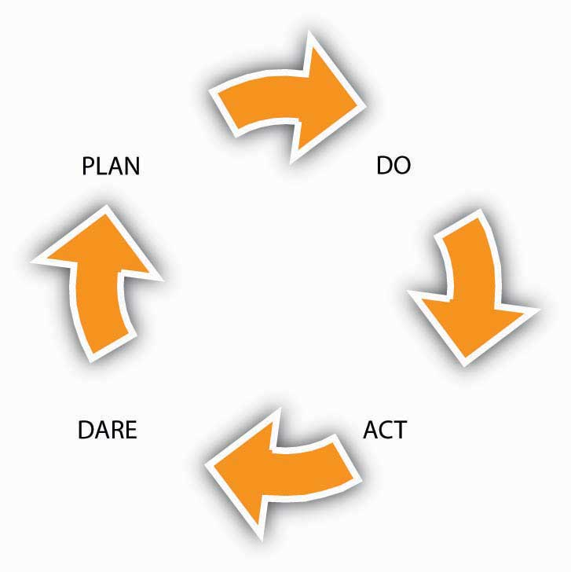

One of the powerful tools in a manager’s tool kit is the Balanced Scorecard, a model that groups goals, objectives, and metrics into the areas of financial, customer, internal business process, and learning and growth. As you know, the scorecard is effective because it helps managers link vision, mission, and strategy to the goals and objectives that employees strive to achieve. What you may not know, however, is that you can apply the scorecard to your personal and professional objectives. Through this process you might also learn more about where and how a Balanced Scorecard can be applied in an organizational context in your role as a manager or employee. That is the purpose of this section.
The Balanced Scorecard, championed by Kaplan and Norton, can be translated into your own individual scorecard, one that helps you achieve your personal and professional goals and objectives. Recall that the scorecard for an organization starts with vision and mission, followed by goals (financial, internal business processes, customer, and learning and growth), which have corresponding objectives, metrics, and tactical activities. When these components are applied to you as an individual, you might see the pieces of the scorecard labeled as shown in the following figure. Let’s review each piece together.
Figure 6.14 My Balanced Scorecard
As with an organization’s mission and vision, your personal mission and vision reflect who you are and where you want to go. Mission reflects your values and philosophy of life. Vision captures what you want to achieve. Which values and principles guide your way? What are your most deeply cherished aspirations? What do you want to achieve? How do you distinguish yourself in society and among your peers and family? If you were to read your biography in 20 years, what would you want it to say about you?
Goals and roles are set out with respect to the areas of financial, others, individual strengths, and learning and growth. Financial, for instance, captures your needs and aspirations about money, as well as the financial obligations that you might have as a result of your role of caring for a parent, sibling, or child. Others reflect goals that you have in relation to other individuals or society at large. How do you want to be seen? Also, in terms of roles, what do relations with your partner, children, friends, employer, colleagues, and others imply for your goals? Individual strengths represent the internal perspective, reflecting goals related to your health and well-being. This category also reflects those strengths that you wish to be distinguishing features. Finally, learning and growth refer to your skills, abilities, and aims with regard to personal and professional learning and growth. How can you learn and remain successful in the future? What type of skills and learning are required now, for future aspired roles?
These portions of the scorecard get more specific in terms of which measurable short-term personal results you want to achieve. What are the most important changes you want to tackle in your career? Similarly, you will want to answer how you can measure your personal results. What values do you have to obtain, and what are your specific targets?
For personal objectives and performance measures to be most effective, you might try seeing how they measure up to SMARTA goal that is specific, measurable, achievable, realistic, and timely. criteria. These characteristics, based on specific, measurable, attainable, realistic, and time bound yield the acronym SMART.Drucker, P. (1954). The Practice of management. New York: HarperCollins. Drucker coined the usage of the acronym for SMART objectives while discussing objective-based management. Here is how to tell if your objectives, measures, and targets are SMART.
A specific objective has a much greater chance of being accomplished than a general one. To set a specific objective, you must answer the six “W” questions:
EXAMPLE: A personal goal would be, “Get in shape.” But a specific objective would say, “Get into good enough shape that 6 months from now I can hike to the summit of a 14,000-foot mountain and back in one day. To do so, by next Monday I will join a health club within 5 miles of home and work out for at least 45 minutes 3 days a week for 3 months, then reassess my progress.”We thank Elsa Peterson, our developmental editor, for providing this example based on one of her friend’s personal experiences. Another real-life comparable example is shown here: Manochio, M. (2008, September 30). http://www.dailyrecord.com/apps/pbcs.dll/article?AID=/20080930/COMMUNITIES12/809300311 (accessed November 10, 2008).
Establish concrete criteria for measuring progress toward the attainment of each objective you set. When you measure your progress, you stay on track, reach your target dates, and experience the exhilaration of achievement that spurs you on to continued effort required to reach your objective.
To determine whether your objective is measurable, ask questions such as: How much? How many? How will I know when it is accomplished? Notice that the specific version of the “get in shape” objective includes metrics of time and distance.
When you identify objectives that are most important to you, you begin to figure out ways you can make them come true. You develop the attitudes, abilities, skills, and financial capacity to reach them. You begin seeing previously overlooked opportunities to bring yourself closer to the achievement of your goals and objectives.
You can attain most any objective you set when you plan your steps wisely and establish a time frame that allows you to carry out those steps. Goals that may have seemed far away and out of reach eventually move closer and become attainable, not because your goals shrink but because you grow and expand to match them through the achievement of nearer-term objectives. When you list your objectives, you build your self-image. You see yourself as worthy of these goals and objectives and develop the traits and personality that allow you to possess them.
Notice that the “get in shape” example outlines steps toward being able to climb the mountain.
To be realistic, an objective must represent an objective toward which you are both willing and able to work. An objective can be both high and realistic; you are the only one who can decide just how high your objective should be. But be sure that every objective represents substantial progress. A high objective is frequently easier to reach than a low one because a low objective exerts low motivational force. Some of the hardest jobs you ever accomplished actually seem easy simply because they were a labor of love.
Your objective is probably realistic if you truly believe that it can be accomplished. Additional ways to know whether your objective is realistic is to determine whether you have accomplished anything similar in the past or ask yourself what conditions would have to exist to accomplish this objective.
You might decide whether an objective to climb a 14,000-foot mountain is realistic by considering whether people of your age and ability have been able to do it.
An objective should be grounded within a time frame. With no time frame tied to it, there’s no sense of urgency. If you want to lose 10 pounds, when do you want to lose it by? “Someday” won’t work. But if you anchor it within a time frame, “by May 1st,” then you’ve set your unconscious mind into motion to begin working on the objective.
T can also stand for Tangible.
An objective is tangible when you can experience it with one of the senses, that is, taste, touch, smell, sight, or hearing. When your objective is tangible, you have a better chance of making it specific and measurable and thus attainable.
The objective of climbing the mountain is both grounded in a time frame—six months from now—and tangible, in that you will either experience climbing the mountain successfully or not.
The next step is implementation. One way to think about implementation of your Balanced Scorecard is through the plan-do-act-dare cycle (PDAD cycleThe plan-do-act-dare cycle is one strategy for undertaking the implementation of personal improvement activities in a personal Balanced Scorecard.), to be followed continuously.Rampersad. 2005. Personal Balanced Scorecard: The way to individual happiness, personal integrity, and organizational effectiveness. Charlotte, NC: Information Age Publishing. As summarized in the following figure, the PDAD cycle consists of the following four phases:
Figure 6.15 The PDAD Cycle
Formulate or update your scorecard, which focuses on your work as well as on your spare time. This spans vision and mission through personal objectives and performance metrics.
Start with a simple objective from your scorecard with corresponding improvement activity, keeping in mind the priorities that have been identified. Each morning, focus on a selected improvement action that you will strive to implement during the day. Execute the improvement activity with emotional dedication, self-confidence, and willpower and concentrate on the action. This must be in concordance with your present skills. Share your good intentions with a trusted person (spouse, friend, colleague, or manager), who will ask questions and give you honest feedback. Doing is related to acting with purpose and to deliver efforts to realize your objective. Ask often for feedback from the trusted person. This gives you the opportunity to measure the progress you have made. Start with habits, which restrict you, influence your life unfavorably, and deliver poor results.
Check whether the improvement activity is working and take action when it is not. Review the results according to the defined personal performance measures and targets, measure your progress, and check to what extent you have realized your personal objectives—as suggested by the “assess my progress” portion of the mountain-climbing goal. If you have not been able to realize your objective, start again. You will improve steadily as it becomes a habit to do good things right the first time and evaluate your scorecard each month with your trusted person. Think of three people who can act as your trusted person, who provide you with inspiration and motivation support for realizing your objectives and improvement actions. Plan to meet with each one of them regularly. Listen enthusiastically to them, brainstorm with them, and take their wise counsel. Develop your skills and competencies to achieve the objectives you selected. Recognize your responsibility to constantly develop yourself. Implement the proven personal improvements, assess the personal results, document the lessons learned, and improve and monitor your actions and thinking continuously. Also think about bringing your personal ambition and your personal behavior into balance, which will result in influencing your ethical behavior. According to Steven Covey, author of The Seven Habits of Highly Effective People, after a few weeks, you will notice small differences in yourself. In two months, the behavioral change will become firmly embedded. After five months, the important personal quality will be yours.
Accept larger challenges by daring to take on a more difficult objective and corresponding improvement action from your scorecard and get on with it. Take a chance and be conscientious to choose a more challenging objective in line with your improved skills when the current improvement action becomes boring. Enjoy the pleasant experience, and document what you have learned and unlearned during the execution of the improvement action. Refine it, and review your scorecard regularly.
The purpose of this section was to help you translate the Balanced Scorecard to your own personal and professional situation. You learned how you might construct the scorecard, and take action to achieve personal results. Through this process, you might also learn more about where and how a Balanced Scorecard can be applied in an organizational context in your role as a manager or employee.